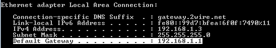
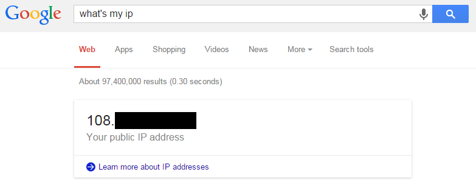

chaorace's HTTP Tunnel guide for Windows
Pre-requisites
You must have:
- Two (or more) Windows OS (XP or later) personal computers you have the rights to modify
- HTTPTunnel by Sebastion Webber
- Must NOT already have another port 80 listener on the network (like a webserver)
- Basic reading comprehension and patience
- Don't blame me for stupid shit
Step One: Server Setup
The first step in creating and accessing an HTTP tunnel is creating an HTTP tunnel. In other words, you'll need to set up a tunnelling server.
A tunnelling server is a machine which is left on at all times to accept and redirect traffic.
To do this, make sure the computer is connected to your home network and disable any settings which may cause the computer to go into sleep mode.
Then, install the HTTPTunnel software from the pre-requisites section onto the designated server machine. Once installed, run HTTP Tunnel Server from the start menu (I recommend adding it to startup so it runs on every boot).
An important thing to mention is that HTTPTunnel will crash without a dialogue if any other program is listening on port 80.
In my case, Skype was taking up the port, so I killed the process and started the server again (I recommend not having Skype on the same computer as the server software at all).
Once started, the server should open an administration webpage (if it doesn't, click this).
If the page loaded successfully, the server should now be working without any need for further configuration. I recommend setting a username and password for the tunnel by using the "Basic" authentication method , but that's not strictly necessary.
At this point, just leave the server on *not in sleep mode* and connected to the network. It must remain on for the entire time that you want to use it as a network tunnel.
Step Two: Port Forwarding
The tunnelling server is now usable from anywhere on your local network, but nowhere else. In order to make it usable anywhere else, your global port 80 incoming traffic must be forwarded to your server and an exception must be added to the server firewall.
Start by opening a command console on the server computer ([ctrl]+R -> "cmd" -> [enter]) and typing "ipconfig" -> [enter]. You should see a few lines like this one. Memorize the ip addresses under "Default Gateway" and "IPv4 Address".

Then, type the "Default Gateway" address into your browser and search for a section along the lines of "Security/Firewall/Pinholes/Port Forward". Upon accessing the page, you may be asked for a login. The default username/password is usually "admin"/"admin".
Once you've arrived at the appropriate section, simply add a new rule that forwards all port 80 traffic to the "IPv4 Address" you found earlier.
Since routers vary tremendously, these port-forwarding instructions may not work for every setup. If you cannot intuit how to port forward, try the instructions available here
Once the port has been forwarded successfully, all that's left to do is add an exception to the server's firewall.
To get to the firewall configuration panel, go to the Start Menu -> Control Panel -> System and Security -> Windows Firewall -> Advanced Settings. Once there, switch to the "Inbound Connections" view and select "New Rule...".
In the wizard that appears, select Port -> Next -> TCP -> Specific Local Ports: 80 -> Next -> Allow the connection -> All checkboxes checked -> Next -> Name: HTTPTunnel -> Finish. Congratulations, you have now configured your server and network to accept HTTP Tunnel connections!
Step Three: Using the HTTP Tunnel
Finally, to make use of your new tunnel, you'll need to configure your client computer to redirect it's traffic through the tunnel.
In order to do this, you must, again, install the HTTPTunnel program found in the pre-requisites section, but this time on the computer you wish to remotely tunnel with. This time, run the HTTP Tunnel Client from the start menu. (You only need to do this whenever you want to make use of the tunnel)
Once started, the client should open a configuration page in your browser (click here if it doesn't). This time around, quite a few settings need to be adjusted for first-time setup.
Start by going to google and typing "What's my IP address?". Memorize the IP that appears

Under the "Tunnel Server" panel, change the "Server" field under "HTTPTunnel Server" group to your home network's global IP address, found in the previous step.
Finally, under the "Tunnel Client" panel, use the "Add" button to designate which ports to tunnel. In the new window that appears, enter the port you wish to tunnel in both the "Map port" field and the "to port" field.
Enter your home network's global IP that was found in the previous step into the "on server" field. Don't forget to fill in a description that you'll remember later!
To tunnel specific games or programs, you'll need to figure out which ports those programs use. This guide was originally created for Hearthstone, so I'll use it's ports as an example.
Hearthstone requires ports 1119, 3724, 6112, 1119, 1120, 4000, 6113, 6114, 4000, and 6881-6999 (HTTPTunnel supports IP ranges, so you'll only need to type "6881-6999" in the appropriate boxes). Repeat the above step for each port.
Once finished, the game should run though your tunnel!
More Projects/Guides
Home